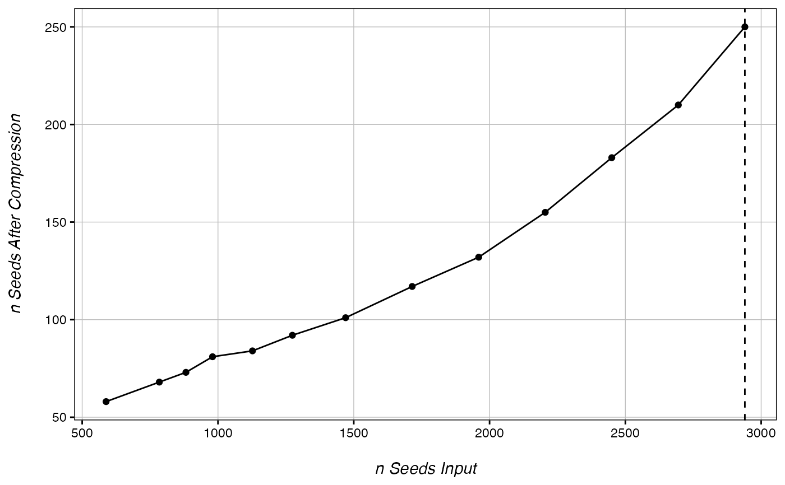

CheckOvercompression.RdIdentifies if seed number to use for DMR calling causes overcompression.
CheckOvercompression(ranks, CpG_cutoff, values, max.dmr.size, return.plot)Rank data frame from getPCRanks.
NULL or numeric. If NULL, seed numbers tested will be input of the values argument. If numeric, seed numbers tested will be CpG_cutoff*values argument. Recommended to us rankDist estimate if not null
Numeric vector, either seed numbers to test if CpG_cutoff=NULL or multipliers if CpG_cutoff is numeric
Automatic=5000. Maximum DMR expansion size in downstream analysis. Note: pipeline is optimized for 5000bp max DMR size, it is not recommended to play with this value.
T/F, whether to return a plot or a numeric representing the best seed number for downstream analysis
If return.plot=T, a grob plotting input seed number vs. compressed seed number is returned. Otherwise, a numeric is returned containing the largest tested input value without detectable overcompression.
ranks <- getPCRanks(eigen, IDs = c("trt", "ctl"), PC = 1)
CheckOvercompression(ranks, 980)
#> Checking 13 seed values for best DMR calling
#> done!
#>
#> No overcompression detected!.
